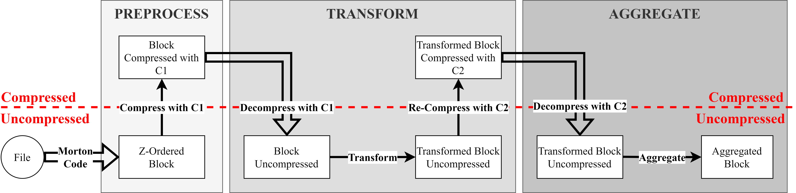
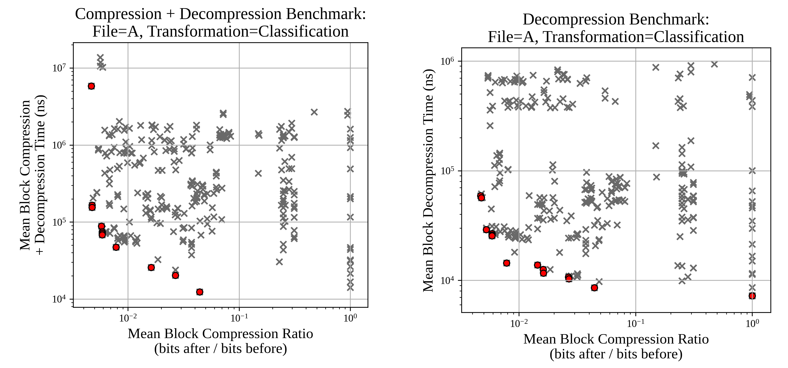
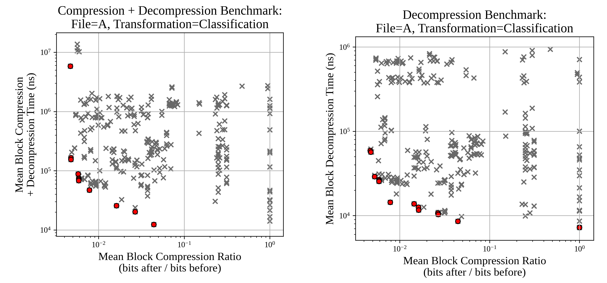
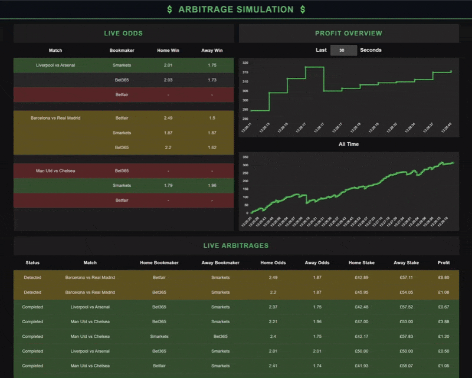

Optimising Geospatial Data Processing
Deployed state-of-the-art SIMD-optimised data compression algorithms to reduce the memory footprint and improve cache efficiency during geospatial data processing.
Leveraged AVX512 in C++ to parallelise compression algorithms, improving performance by maintaining compressed data closer to the CPU.
Achieved up to 78% speedups by fusing decompression and aggregation stages of computations.
Utilised SLURM for managing HPC resources, enabling 8000 hours of benchmarks.
Applied multi-objective Pareto optimisation to narrow the search-space of codec combinations for optimal space-vs-time tradeoffs.
Awarded 78% (Distinction) for the thesis.

Optimising Geospatial Data Processing
using SIMD-Accelerated Data Compression
MRes thesis on beating main-memory bandwidths for geospatial computation via cache-optimised in-memory data compression. Implemented in C++ with AVX512.
C++  Python
Python  SLURM
SLURM  GDAL
GDAL

Multi-Agent Car Parking
Undergraduate thesis applying reinforcement learning to simulate and control groups of autonomous vehicles using PPO and Unity ML-Agents.
Python C#  Unity Slurm
Unity Slurm

Simulates odds changes and bet execution delays to explore slippage.
Distributed Python/FastAPI backend using Redis for inter-service communication.
Real-time TypeScript/React frontend streaming from a webhook.
Dockerised backend.
Extensively tested with 43 high-signal unit tests (28 backend, 15 frontend).
Arbitrage Simulation
Event-driven full-stack simulation of an arbitrage bot for betting.
Python TypeScript  Redis
Redis  React
React  Docker
Docker 
ModulePal
Web app enabling Warwick students to review academic modules, helping them make better decisions. It ensures legitimacy by only allowing a user to review a module they have taken (integrating with university systems), and harnesses student data to provide confidential grade-based analytics.
Technical details:
TypeScript Java  SQL
SQL  React Spring
React Spring  Firebase
Firebase